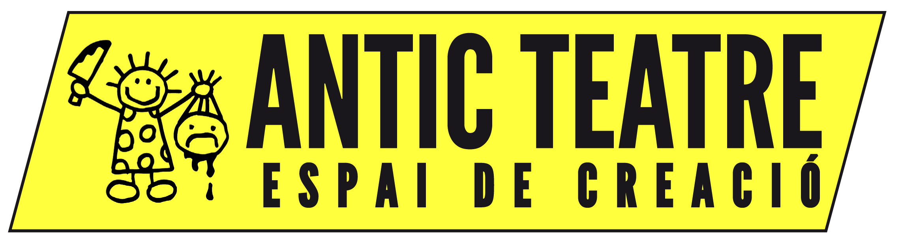
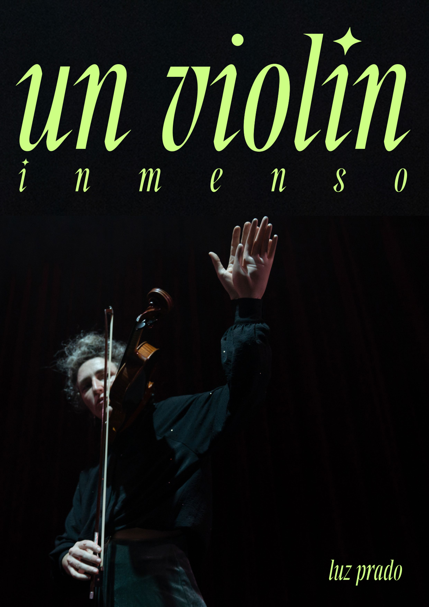
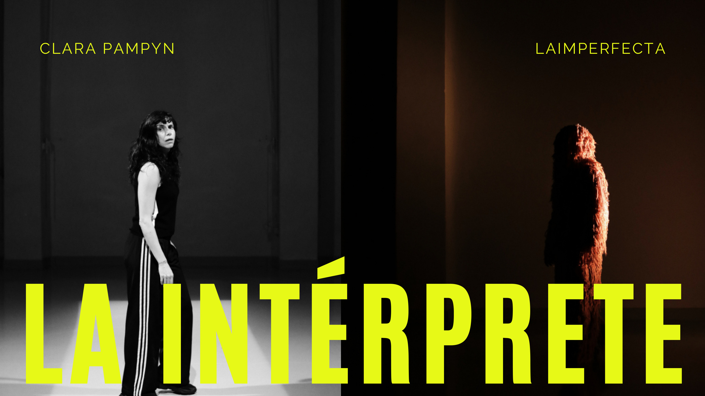
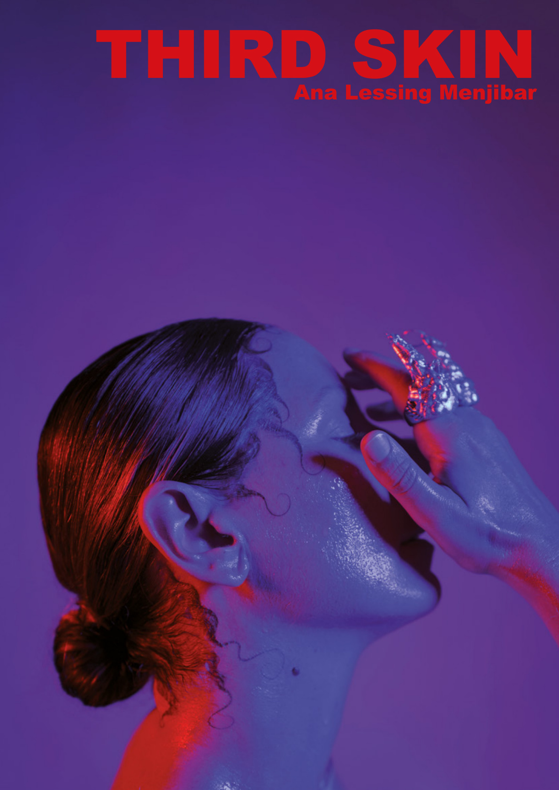
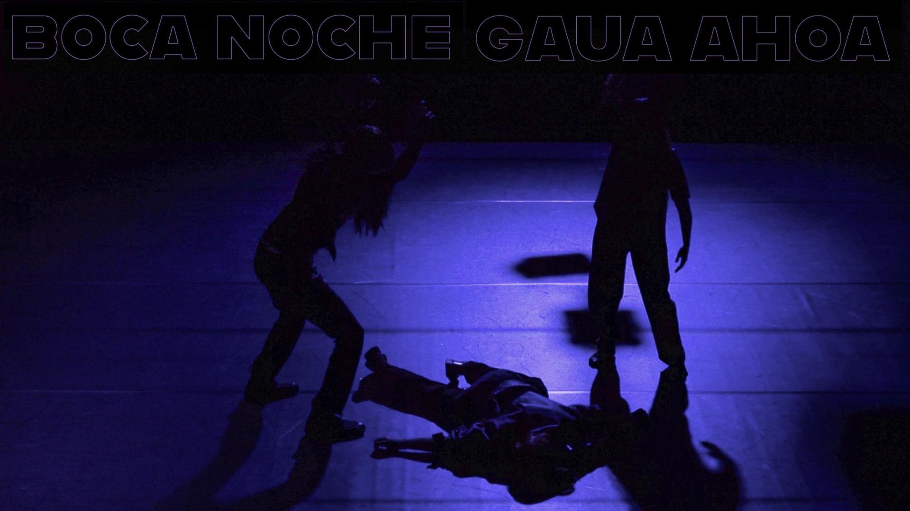
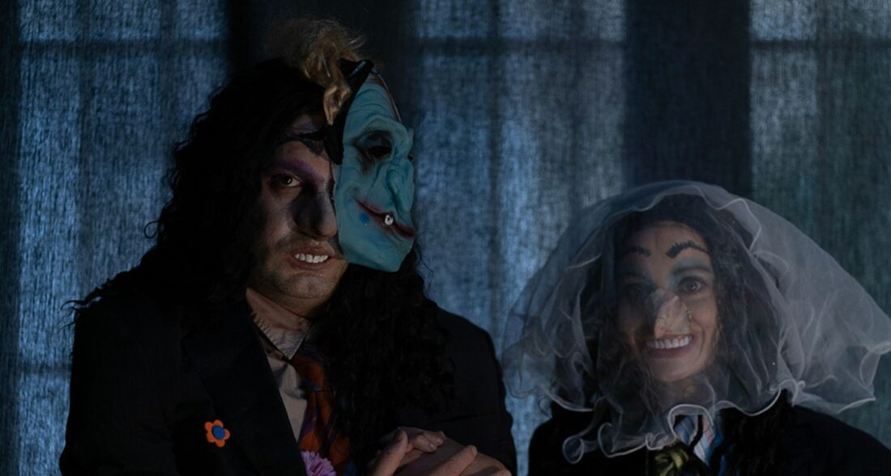
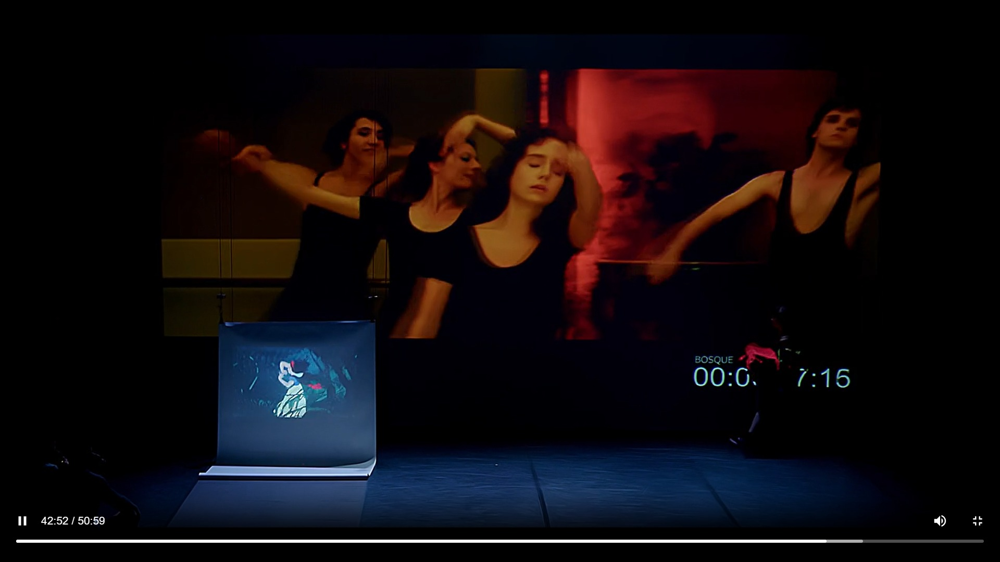

Fuera de Catalunya, con afinidad Antic
Selección de piezas que dialogan con la investigación, la experimentación y el desarrollo de nuevos lenguajes escénicos: cuerpos, nuevas dramaturgias, artes vivas, humor grotesco, sonido, archivo y dispositivos híbridos.
Luz Prado
Cuerpo, escucha y sonido. Una pieza muy fina; si no entra en Salmon, creo que sería una opción muy buena para apoyar desde Antic.
02Clara Pampyn
Madrid, presencia escénica, cuerpo y fragilidad. Encaje directo con nuevas dramaturgias y una voz muy actual.
03Ana Lessing
Buena propuesta entre flamenco, archivo político, cuerpo e instalación, pero se nos sale de caché con el presupuesto actual.
04Ibon Salvador
Pieza inmersiva: oscuridad, cuerpo, percepción y experiencia sensorial. Muy buena si buscamos nuevos lenguajes del cuerpo.
05La Tarara
Punk, grotesco, bufón y humor raro. Energía Antic muy clara, con presencia escénica directa.
06Javier Hedrosa
Escritura expandida, cine, dobles pantallas y cuerpo. Me interesa mucho por cómo trabaja capas de imagen, audio y referencia.

Un violín inmenso
Luz Prado es violinista, música y performer. La pieza funciona como concierto expandido: un violín que ocupa todo el teatro, o un teatro que vibra como un violín. Trabaja la relación entre cuerpo, instrumento, espacio y escucha.
Me gusta que le hayas pasado esta propuesta a Quim. La he visto y me parece muy interesante. Si no la cogen en Salmon, creo que sería muy buena opción para apoyar desde Antic.

La intérprete
Pieza estrenada en Replika Teatro a finales de 2024 y circulada por varias salas. Gira alrededor de éxito, identidad, trabajo, amor, cansancio y práctica artística desde una presencia escénica muy directa.
Me interesa porque tiene cuerpo, fragilidad, pensamiento y no se queda solo en discurso. Tiene una estética bastante actual y creo que puede funcionar muy bien.

Third Skin / REMATAR
Artista hispano-alemana que trabaja entre danza contemporánea, flamenco, artes visuales, instalación, música electrónica y archivo político. Third Skin aborda memoria familiar, fascismo, heridas colectivas y resistencia. REMATAR estrena en febrero de 2027 en Berlín y busca colaboraciones en España.
Es una buena propuesta, con un universo artístico muy potente para Antic, pero se nos sale de caché con el presupuesto actual. Si más adelante hay margen económico, convendría confirmar si puede facturar desde España o mediante una entidad española y valorar con ella si tiene más sentido Third Skin o REMATAR.

BOCA NOCHE / GAUA AHOA
Pieza de 60 minutos entre oscuridad, percepción, vibración, cuerpos, voces y oscilaciones. Un umbral entre lo que se ve, lo que se escucha y lo que se presiente. Los primeros minutos del video completo son a oscuras como parte de la propuesta inmersiva.
Me parece muy Antic si buscamos una pieza sensorial y corporal, menos textual y más de experiencia. Olga ya abrió la puerta a 1.500 euros o algún fijo, y posible alojamiento si la pieza interesa mucho.

Dios bendiga a Tiny
Creación escénica multidisciplinar sobre Tiny Tim: teatro, performance, música, coreografía, audiovisual, humor grotesco y energía bufona. Ireneu la recomendó como súper punk contemporáneo mezclado con grotesco y bufón.
Creo que puede funcionar muy bien en Antic por humor raro, cuerpo, exceso y una estética incómoda pero popular. Es más directa que Javier y probablemente más fácil de defender si buscamos presencia escénica y energía.

Escrituras no creativas
Propuesta de escritura coreográfica a partir de Suspiria, con copia, remake, autoría, traducción simultánea y variación. Tiene apoyos muy buenos: La Mutant, Dansa Valencia, Espai LaGranja, La Casa Encendida, La Nau Ivanow e IVC.
Me interesa mucho porque genera dobles pantallas y capas de referencia: una proyección grande, una pantalla pequeña con Blancanieves, otra película al fondo, y un trabajo de audio que va desplazando la lectura de la escena. Hacia el minuto 40-50 del vídeo se ve muy claro ese juego entre cine, cuerpo, copia, traducción y dispositivo.